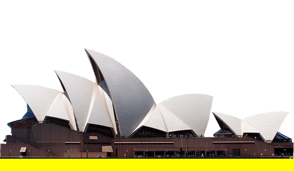
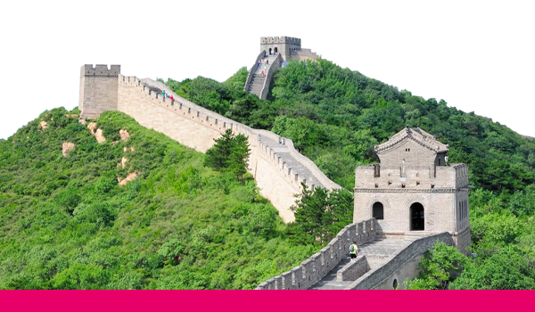

히말라야산맥(─山脈)은 아시아의 산맥으로 인도 아대륙과 티베트고원 사이에 놓여 있다. 넓게는 히말라야산맥과 이어진 카라코람산맥과 힌두쿠시산맥 및 파미르고원의 여러 산맥을 포함해서 말하기도 한다.
에베레스트산을 비롯한 14 개의 8000미터 봉우리가 모두 이곳에 모여 있다. 히말라야산맥 바깥에서 가장 높은 산은 안데스산맥에 있는 6,959 m의 아콩카과산이므로,
7,000m가 넘는 산들은 모두 히말라야산맥에 속하므로, '세계의 지붕'이라 일컬어지는 곳이다. 히말라야는 산스크리트어로 "눈이 사는 곳"이란 뜻이다.

시드니 오페라 하우스
1973년 10월 20일에 문을 연 시드니 오페라 하우스(영어: Sydney Opera House)는 오스트레일리아 뉴사우스웨일스주 시드니에 있는 공연장이다.
조개 껍질처럼 생긴 이 건물의 지붕 모양은 국제 디자인 공모전의 우승작 작가인 덴마크의 건축가 이외른 우촌이 오렌지 껍질을 벗기던 도중에 떠올린 것으로 알려져 있다.
발레와 음악 공연, 오페라가 열리는 시드니 오페라 하우스는 오스트레일리아 오페라 극단, 시드니 극장단, 시드니 교향 관현악단의 상주지이며 뉴사우스웨일스주 문화부 장관 산하 기구인 오페라 하우스 기금에 의해 운영된다.
시드니 오페라 하우스는 2007년 유네스코 세계 유산에 선정되었다.

만리장성
만리장성(중국어 정체자: 萬里長城, 간체자: 万里长城, 병음: Wànlĭ Chángchéng 완리창청[*])은 흉노족 등의 유목 민족의 침입을 막기 위해 중국의 고대 진나라(시황제)
때 기존의 성곽을 잇고 부족한 부분은 새롭게 축조하여 만든 거대한 성곽이다. 이후 명나라 시대에 이르기까지 중국의 역대 왕조에서 지속적으로 보수하고 개축 및 신축하여
현재까지 남아 있으며 중국을 상징하는 대표적인 유적으로 널리 알려져 있다. 1987년에 유네스코의 세계문화유산에 등재되었다.